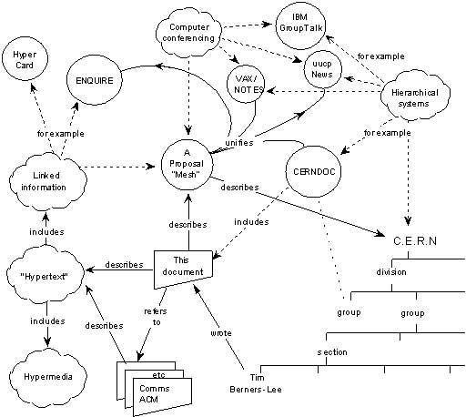

Early Web History

The Original Proposal
The diagram shown here is Tim Berners-Lee's original 1989 proposal at CERN, titled "Information Management: A Proposal." It maps out how his idea for the Web grew out of earlier systems he had worked on, like ENQUIRE, and broader concepts of "hypertext" and "hypermedia," meaning documents that link to other documents rather than sitting in a rigid, top-down file structure. Berners-Lee described this as a "mesh" of linked information that would let researchers at CERN navigate between related documents freely, which became the foundational idea behind the Web and, soon after, HTTP itself.
From HTTP/0.9 to HTTP/1.1
Created in 1991 by Sir Tim Berners-Lee, HTTP/0.9 was the initial protocol iteration, designed solely for academics to share text-based research papers. It was highly rudimentary, supporting only the GET method, and lacked headers or status codes.
By the mid-1990s, HTTP/1.0 was formalized to support graphical interfaces and metadata through headers and MIME types. However, it suffered from a performance flaw: every asset required a new TCP connection, creating significant latency due to the connection handshake.
To resolve this, HTTP/1.1 was introduced in 1997, utilizing persistent connections via the keep-alive header, which allowed a single TCP connection to serve multiple requests. This version also introduced chunked transfer encoding and robust caching.
These early growing pains, like the lack of persistent connections and the absence of any real performance optimization, are exactly what later versions of HTTP were built to solve. The next page, Modern Web Evolution, picks up this story with HTTP/2 and HTTP/3.